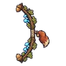

กระรอกปาลูกโอ๊ก · ร่างขนคราม
มอนธาตุดิน Lv 26–40
เจอที่
| แมพ | โซน | Lv | ภูมิภาค |
|---|---|---|---|
| ป่าโอ๊กยักษ์ | 26–40 | ป่ากองไฟ |
ค่าสถานะตามเลเวล
| Lv | HP | ATK | DEF | MDEF | EXP | Job |
|---|---|---|---|---|---|---|
| 26 | 3,537 | 50–76 | 9 | 6 | 74 | 56 |
| 33 | 5,693 | 69–103 | 11 | 8 | 90 | 68 |
| 40 | 9,623 | 94–141 | 13 | 10 | 106 | 80 |
ตีด้วยธาตุไหนดี
แรงขึ้น: ไฟ ×1.5 พิษ ×1.25
เบาลง: ลม ×0.5 ดิน ×0.25
วัตถุดิบที่ดรอป
| ของ | โอกาส | |
|---|---|---|
| หมวกลูกโอ๊กยักษ์ | 82% | 1 ชิ้น (15% ได้ 2) |
อุปกรณ์ที่ดรอป (1)
| ของ | โอกาส |
|---|---|
 ธนูลูกโอ๊กกระรอก | 0.5% |
สกิล
ยิงกระจาย (Lv 25+) · ยิงกระจาย (Lv 60+) · ปาตกใส่ (Lv 60+)